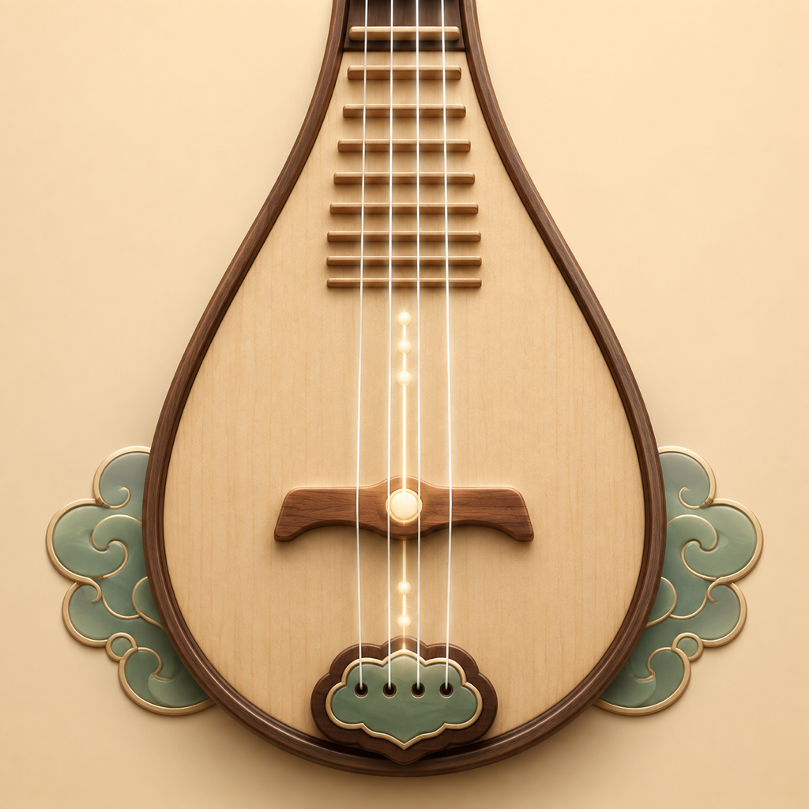

A3子弦 · 220 Hz
E3二弦 · 164.81 Hz
D3三弦 · 146.83 Hz
A2缠弦 · 110 Hz
拨弦，即可聆听
打开应用并允许麦克风访问，即可开始调音。自动识弦，也支持手动选择；指针向左表示偏低，向右表示偏高。
按你的习惯定弦
支持标准与自定义定弦，调整 A4 基准频率和音准范围。每根弦均可播放标准音，方便听音对照。
音频留在设备上
实时音高分析在本机完成，不录音、不保存音频、不上传。应用提供广告及可选的按年去广告订阅。

小胖听琵琶打开应用并允许麦克风访问，即可开始调音。自动识弦，也支持手动选择；指针向左表示偏低，向右表示偏高。
支持标准与自定义定弦，调整 A4 基准频率和音准范围。每根弦均可播放标准音，方便听音对照。
实时音高分析在本机完成，不录音、不保存音频、不上传。应用提供广告及可选的按年去广告订阅。